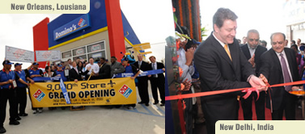
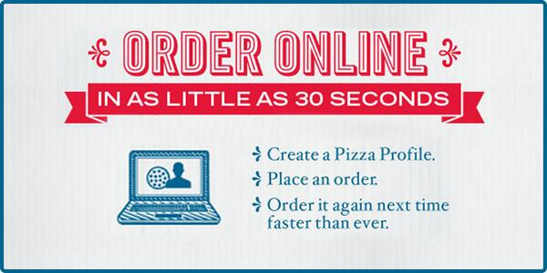
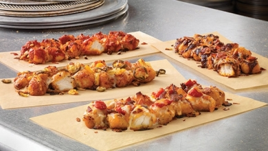
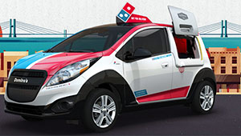
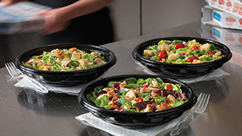
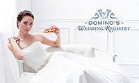
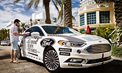
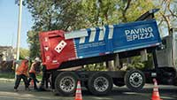
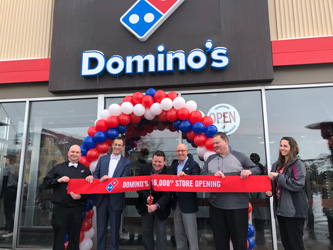
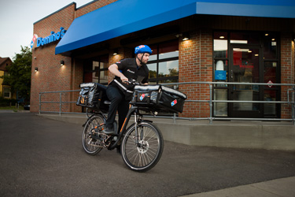

2010s
2010

In March, Domino’s Pizza
opens its 9,000th store worldwide, with dual celebrations in New Delhi, India and New Orleans,
La.
- Bain Capital sells its interests in Domino's Pizza.
- Domino's raises $2.7 million during the 7th annual St. Jude Children's Research Hospital
Thanks and Giving campaign, marking the largest single charitable donation in the
company's 50-year history.
- Domino’s Pizza celebrates its 50th anniversary in December.
2011
- Pizza Today Magazine names Domino's its "Chain of the Year" for the second straight year –
making the company a three-time overall winner, and the first pizza delivery company to receive
the honor in back-to-back years.
- Domino's continues to revamp its menu, launching a new recipe for Buffalo Wings and Boneless
Chicken, a new line of Domino's Artisan™ Pizzas using premium ingredients and two new
bread sides – Stuffed Cheesy Bread and Parmesan Bread Bites.
- Patrick Doyle is named No. 1 Best CEO of 2011 by CNBC.
- Domino's Pizza is recognized as the Official Pizza of the NCAA® and Official Pizza of
NCAA March Madness®. The partnership lasts from 2011-2013.
2012

Domino's unveils its new
logo and 'Pizza Theater' store design ... marking a significant change in the customer
experience at Domino's!
- Domino's debuts its ordering app for Android phones. This, in addition to its existing iPhone
app which debuted in 2011, offers a Domino's mobile ordering app to more than 80% of
smartphones.
- Domino's Pizza debuts its mobile ordering technology to Amazon's Kindle Fire by launching the
Domino's Pizza app into the Amazon Appstore for Android. This marks the company's first
appearance in the Amazon Appstore for Android and the company's first Android tablet app.
- In August, Domino's launches its "Ultimate Delivery Vehicle" design competition – a campaign as
unique as anything in its 52-year history. Pizza lovers and car enthusiasts are asked to help
Domino's revolutionize the pizza industry by contributing to the design of the Ultimate Delivery
Vehicle – something Domino's fans and customers could see as part of the delivery experience in
the future. Stay tuned!
- Domino's debuts the biggest product launch since the redesign of its core hand-tossed pizza,
launching its Handmade Pan Pizza in September. Made from fresh, never-frozen dough, the terrific
product marked Domino's entry into the pan pizza scene in a big way!
- Domino's opens its 9,999th store with a celebration in Carlsbad, Calif. Days later, Domino's
celebrates the opening of its 10,000th store in Istanbul, Turkey.
2013

Domino’s launches Pizza
Profiles on dominos.com. The enhanced online ordering profile platform gives customers the
ability to save information and record their favorite order in as little as five clicks, or
about 30 seconds.
- Domino’s opens its first Thailand store in Bangkok.
- Domino’s updates its revolutionary Domino’s Tracker® with a new experience exclusive
to customers who order Handmade Pan Pizza.
- Domino’s introduces a pilot program in one Salt Lake City store that let customers watch their
orders being made live via a webcam. Five webcams were placed in the store’s kitchen for
the entire month of May.
- Domino’s launches a new ordering app for Windows Phone 8. The new app added voice
capabilities and allows customers to pin their current order directly to their Start screen,
which allows direct access to track an order using Domino’s Tracker®.
- Domino’s debuts its “Second Hand Logos” program on Pinterest. The program encouraged artists to
recycle old Domino’s logo materials (from signage and closing to store materials) into pieces of
art.
- Domino’s launches a unique campaign highlighting franchisee success stories. The campaign
featured franchisee Reece Arroyave’s story from handing out fliers to becoming a business
owner. More than 95% of current Domino’s Pizza franchisees in the U.S. started off
as delivery drivers or pizza makers.
- Domino’s opens its first ever ‘Pizza Theater’ store in New Orleans, La.
2014

Domino’s introduces its
new Specialty Chicken – a delicious combination of toppings, sauces and cheeses layered
over 12 bites of lightly breaded, 100% whole breast white meat chicken. Specialty Chicken
comes in four unique flavors: Crispy Bacon & Tomato, Spicy Jalapeno-Pineapple, Classic Hot
Buffalo and Sweet BBQ Bacon.
- Domino’s unveils its ordering app innovation using Ford SYNC® AppLink™ System.
Customers who have a Pizza Profile on their Domino’s mobile app, as well as the Ford SYNC in-car
connectivity system, will be able to use Ford SYNC to place their saved “Easy Order” in just a
few simple, voice-activated steps.
- Domino’s starts accepting payment via Google Wallet.
- Domino’s releases its new iPad® ordering app, which puts pizza at the center of
everything – including updated, mouthwatering food photography and a newly created, more
realistic custom pizza builder.
- Domino’s opens its 11,000th store in the world in Brantford, Ontario, Canada.
- Domino’s launches an online group ordering tool which makes ordering pizza for large parties and
group gatherings easy.
- Domino’s kicks off voice ordering for its iPhone® and Android™ apps.
- Domino’s opens its first store in Kenya.
2015

Domino’s DXP™
(Delivery Expert), a specially designed and built pizza delivery vehicle three years in the
making, is launched across 25 markets in the U.S. The car can hold up to 80 pizzas and features
a warming oven located behind the driver’s door, as well as storage areas designed for easy
loading and unloading of pizzas and other menu items.
- Domino’s launches AnyWare, a suite of innovative technology that allows customers to order in
more ways and on more devices than ever before. Customers can order via text, tweet, Samsung
Smart TV ®, Ford SYNC® AppLink™ system, the Android Wear
smartwatch app, Pebble® smartwatch app, or via voice ordering with Dom.
- Domino’s raises $5.2 million during the 11th annual St. Jude Children’s Research Hospital
Thanks and Giving campaign, marking the largest single charitable donation in the
company’s history.
- Domino’s Event Center opens at St. Jude Children’s Research Hospital in Memphis, Tenn. The
flexible event space can be used for hospital fundraising events, patient and family activities,
and entertainment.
- Domino’s opens in six new international markets: Cambodia, Azerbaijan, Republic of Georgia,
Portugal, Italy and Belarus.
- Domino’s celebrates the grand opening of its 12,000th store in the world – in Oklahoma City – by
presenting a $12,000 check donation to the Boys and Girls Clubs of Oklahoma County.
- Domino’s launches Marbled Cookie Brownie – a warm and gooey blend of milk chocolate chunk cookie
and fudge brownie that is baked in the oven and cut into nine pieces.
- Domino’s introduces Piece of the Pie Rewards, a loyalty program that provides exclusive
members-only discounts, bonus offers and perks.
- Domino’s celebrates its 55th anniversary in December.
2016

Domino’s launches salads
in all stores across the U.S. They come in three varieties: Classic Garden, Chicken Caesar and
Chicken Apple Pecan.
- Domino’s opens its 1,000th store in India.
- Domino’s unveils the following additions to its line of AnyWare technology: Amazon Echo, Apple
Watch, zero-click ordering, Facebook Messenger and Google Home.
- Domino’s rolls out a second wave of DXP delivery vehicles across the U.S., bringing the total
number of DXPs to 155.
- Domino’s celebrates the grand opening of its 13,000th store in the world. The store is located
in Auburn, Wash. – just outside of Seattle.
2017

Domino's introduces the
first wedding registry for couples who prefer delicious melty cheese to crystal gravy boats.
- Nine months later, Domino's welcomes its next labor of love to the world - a baby registry for
pizza-loving couples.
- Domino's opens the doors to its 14,000th store in the world, located in Cyberjaya, Malaysia.
- Domino's hosted its first-ever National Movie Night on Facebook Live by streaming "Ferris
Bueller's Day Off."
- Domino's launches Bread Twists, a delicious addition to its lineup of side items.

Domino's and Ford team
up on an industry-first collaboration to understand the role that self-driving vehicles can play
in pizza delivery. As part of the test, researchers from both companies investigate customers'
reactions to interacting with a self-driving vehicle as part of their delivery experience.
- Domino's becomes the first and only national pizza delivery chain to offer points to its loyalty
members no matter how they order - via online, phone and in-store.
- Domino's opens stores in three new international markets: Slovakia, Malta and Austria.
- Domino's adds IFTTT and Slack to its lineup of AnyWare ordering technology.
2018

Domino’s vows to save
pizza, one pothole at a time, with its introduction of Paving for Pizza grants. The company gave
away one grant in each state in the U.S. to help smooth the ride home for freshly-made pizzas.
- Domino’s and Ford announce a second round of self-driving delivery vehicle testing. This round
focuses on customer experience in an urban setting, taking place in Miami.
- Domino’s celebrates the opening of its 15,000th store in the world, located in Lewisville,
Texas.
- Loyal customers gained yet another way to earn points toward free pizza with Domino’s Piece of
the Pie Pursuit mobile game. The game provides players with pizza-themed challenges such as
guiding your pizza cutter car along a boost-filled track in a race against the clock or using a
pizza sauce “spoodle” to catapult to new heights.
- The company launches another delivery revolution – Domino’s Hotspots. More than 200,000 Domino’s
Hotspots are active nationwide so customers can receive delivery orders at spots that don’t have
traditional addresses – places like local parks, sports fields and beaches.
- After more than 20 years with the company and eight years as CEO and president, Patrick Doyle
departs from Domino’s.
- Domino’s Board of Directors promotes Richard Allison to the role of CEO, effective July 1, 2018.
- Domino’s launches a dinner bell function within its app to make getting everyone to the dinner
table even easier.
- Domino’s continues its global growth momentum with the opening of its first store in Mauritius,
located in Port Louis.
2019
- o Domino’s launches the Points for Pies campaign and celebrates the love of all pizza by giving
away rewards points for any pizza.

The 16,000th Domino’s
store in the world opens in Cheektowaga, New York.
- Domino’s continues its international growth as it opens the first stores in Bangladesh, the
Czech Republic and Luxembourg.
- Domino’s and Xevo, the leader of in-vehicle commerce and services for automakers, delivers a
pre-loaded in-car ordering system where customers can order their favorite pizza with a few taps
of their vehicle’s touchscreen.

Domino’s brings
pedal-powered delivery to stores across the U.S. with its launch of e-bikes.
- Domino’s Innovation Garage opens in Ann Arbor, Michigan. The additional workspace at Domino’s
World Resource Center celebrates the spirt of creativity and collaboration, as it allows
cross-functional teams to work together to create and test news ideas.
- Domino’s celebrates the grand openings of its 1,200th store in India and its 600th store in
Japan.
- Domino’s begins rolling out GPS delivery tracking technology in stores throughout the U.S.
2020
- Domino’s made picking up pizza easier than ever with Pie Pass – technology that rolls out the
red
carpet for carryout customers who order and pay online by allowing them to skip the line in
stores
and grab their order.
- The pizza brand commemorates the opening of its 17,000th store in the world with a celebration
at
Domino’s in Bradbury, New South Wales, Australia.
- Domino’s company-owned and franchised stores announce they’re donating about 10 million slices
of
pizza within their local communities to help feed those in need during the COVID-19 crisis.
- Domino’s introduces its Rain Check Registry for couples who are postponing or rescheduling their
weddings due to the pandemic. The registry features gift card packages to help pizza-loving
couples
get through long days of creating change-the-date cards, negotiating with florists and
rescheduling
honeymoon plans.
- The largest pizza company in the world based on global retail sales announces yet another way
for
customers to carry out their favorite pizza: via Domino’s Carside Delivery™. The contactless
carryout option allows customers who place a prepaid online order to stay in their vehicle while
a
team member delivers the order to their car.
- Can pizza boxes be recycled? Oh yes, they can! Domino’s and its primary box supplier, WestRock,
launch recycling.dominos.com – a website to share the facts about pizza box recycling.
- Domino’s opens its first store in Croatia.
- Domino’s introduces two new menu items, designed for delivery: the chicken taco pizza and the
cheeseburger pizza.
- Domino’s commits to raising $100 million by 2030 for St. Jude – marking the largest commitment
in
the hospital’s history. In honor of the pledge, St. Jude announces it will name its newest
on-campus
housing facility The Domino's Village. The facility will feature 140 fully-furnished apartments
that
will accommodate a variety of patient families.
- As 2020 proves to be a difficult year for many, Domino’s awards a special bonus to company-owned
store and supply chain hourly team members and drivers – an investment totaling more than $9.6
million.
- Domino's establishes the United Negro College Fund Domino’s Pizza Scholarship for full-time
students who are enrolled at a Historically Black College or University.
|